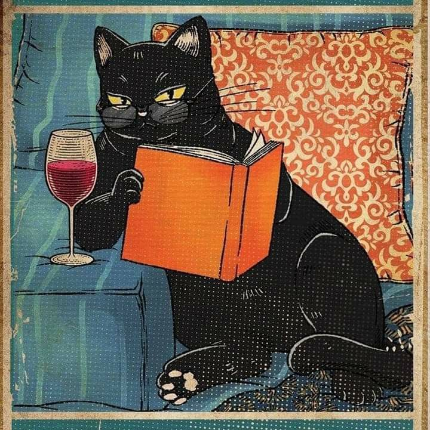
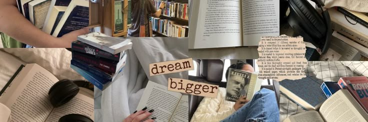
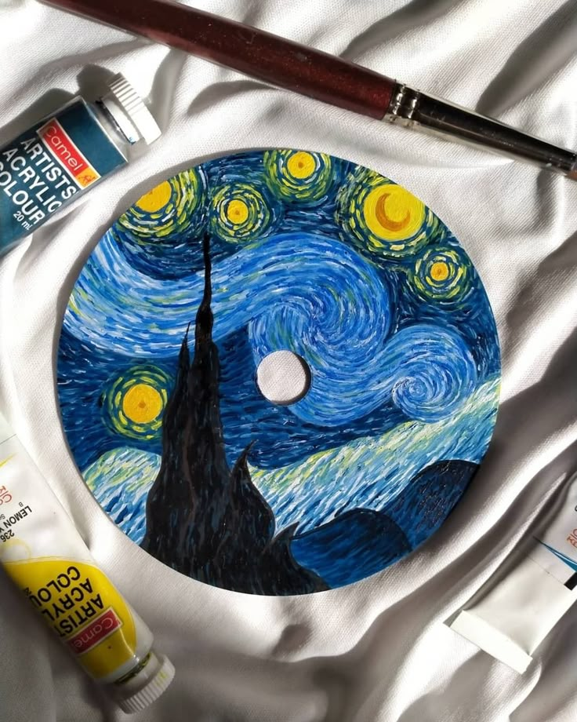
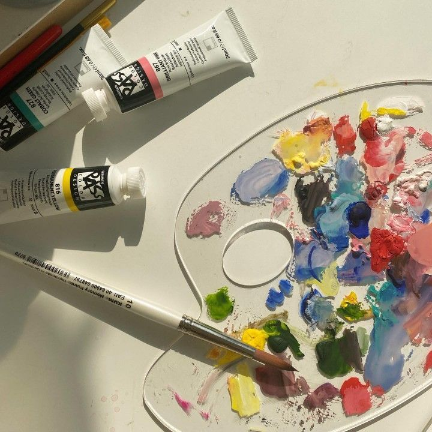
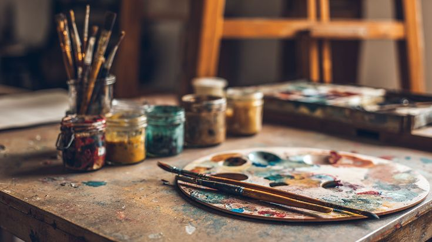

PASATIEMPOS
Nombre:
Lectura y Escritura
Descripción:
"Para viajar lejos no hay mejor nave que un libro". -Emily Dickinson
Me gusta la lectura porque me permite aprender nuevas ideas, conocer diferentes perspectivas y desarrollar mi imaginación. Disfruto cómo cada libro puede transmitir emociones, enseñanzas y experiencias que me ayudan tanto en mi vida personal como académica. Además, leer me ayuda a relajarme y a fortalecer mi creatividad y comprensión.
Me gusta la escritura porque me permite expresar mis ideas, pensamientos y emociones de una manera creativa y personal. Disfruto escribir porque puedo comunicar lo que pienso, desarrollar mi imaginación y mejorar mi forma de expresar mis opiniones.






Nombre:
Pinturas y Acuarelas
Descripción:
Me gusta la pintura y la acuarela porque me permiten expresar mi creatividad y transmitir emociones a través de los colores y las formas. Disfruto el proceso de crear cada detalle y experimentar con diferentes estilos y combinaciones. Además, pintar me ayuda a relajarme, despejar mi mente y desarrollar mi paciencia e imaginación.